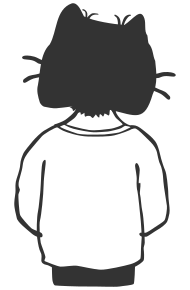
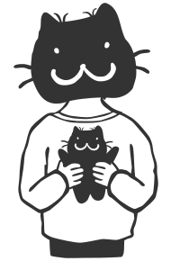
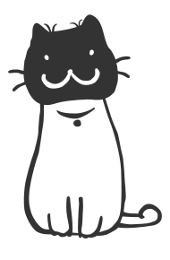
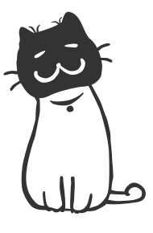

Service
ほどよい距離感で一緒に歩む
クライアント様が事業を広げるために必要なツールを明確に表現し、自社で情報発信できる仕組みを整え、ロゴマークや名刺、会社案内、ノベルティ、POP類の統一感あるトーン作りをサポートいたします。 また、月額での継続的なクリエイティブ支援や、コンテンツ企画・SNS運用（Instagram）におけるマーケティング伴走、小物類でしたら商品撮影も行っています。
「社内でデザイナーが雇えない」、「広報やWebがわかる人がいない」 クライアント様の現状に合わせて、ほどよい距離感をもってサポートいたします。
About
“ 要点は押さえる陽だまりの猫 ”
ーーある先輩からの言葉ーー
ジュエリーデザインの会社に勤務したいた時の先輩のひとりが、 私が退職するときに寄せ書きに書いてくださった「私の印象」が “ 要点はちゃんと押さえる陽だまりの猫 ” と言うものでした。
当時は社員寮だったので猫は飼えなかったし、その大御所先輩とは 恐れ多すぎてとてもじゃないけど気さくに喋れるような機会も持てなかった。
にも拘らず、大御所先輩から 「猫」・・という表現が出てきたことに驚きと笑いを隠せませんでした笑。
先輩はずーっと しょぼいけど妙にほっこり系猫なワタシを観察する虎のようだったのかもしれません。
もっとしっかりお話しする勇気さえあればと自責の念に駆られながら 新たなデザインの世界にシフトし、その先々でも猫好きなクライアント様と 共にお仕事をしたり、イベントを企画したりと「猫」を通した 不思議な異業種交流が積み重なりあらゆるデザインに関するキャリアを 積むことが出来ました。
戌年なんですけどね・・・
猫神様に見守られながらデザインのお仕事で食べさせていただいております。


Art Director／Designyar
Tokiocat
元ジュエリーデザイナー。 都内鉄道会社系の広告代理店のハウスエージェンシーのグラフィックデザイナー、不動産広告代理店デザイン課在籍後、2026年に独立。フリーランスデザイナーとして活動。 ポスター、リーフ、パンフレットなど紙モノ広告を中心としたグラフィックデザインを得意とし、 webデザイン、モーショングラフィックなども制作。 受け手の人たちが安心するような 優しさ、楽しさ、親しみのあるデザインを手がけます。


CAT
Otama
2013年9月29日（招き猫の日）生まれ（推定）。 猫の里親募集サイトを見たTokiocatと初対面するや否やTokiocatの膝に飛び乗り大音量のゴロゴロ音を奏で、自らキャリーバッグの中へ入り込み飼い猫の道を自ら決断する。その後は自宅に居ながらにNPO法人、一般企業、個人事業主など数々の猫好き異業種クライアント様を引き寄せ招き猫顔負けの福猫偉業を遂げる。
Contact
一粒のカリカリのような小粒サイズのことでも お気軽にご相談ください。 寄り添い、ともに一歩づつ前へ進んでいきます。